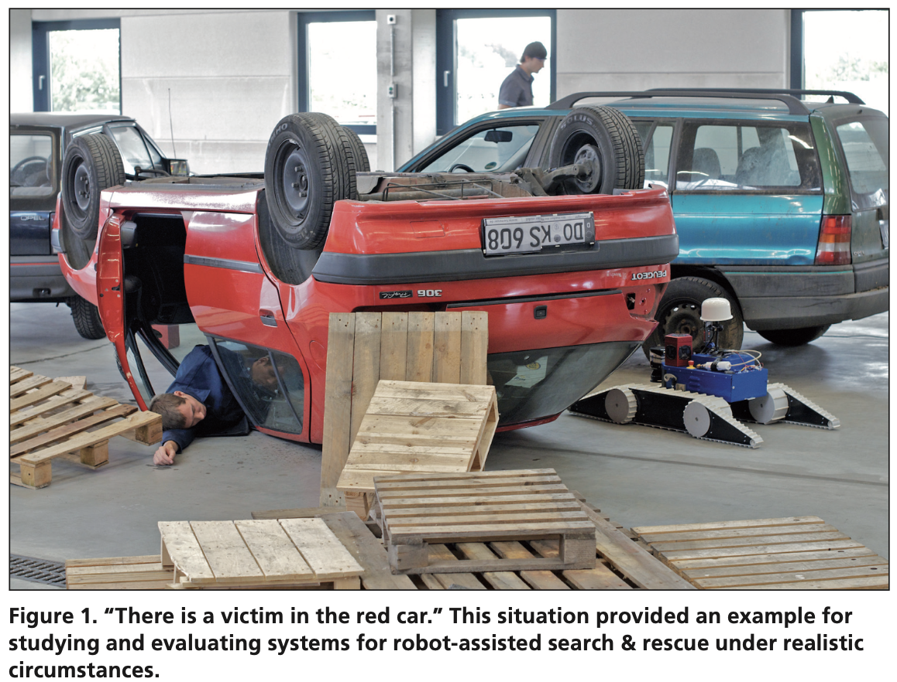
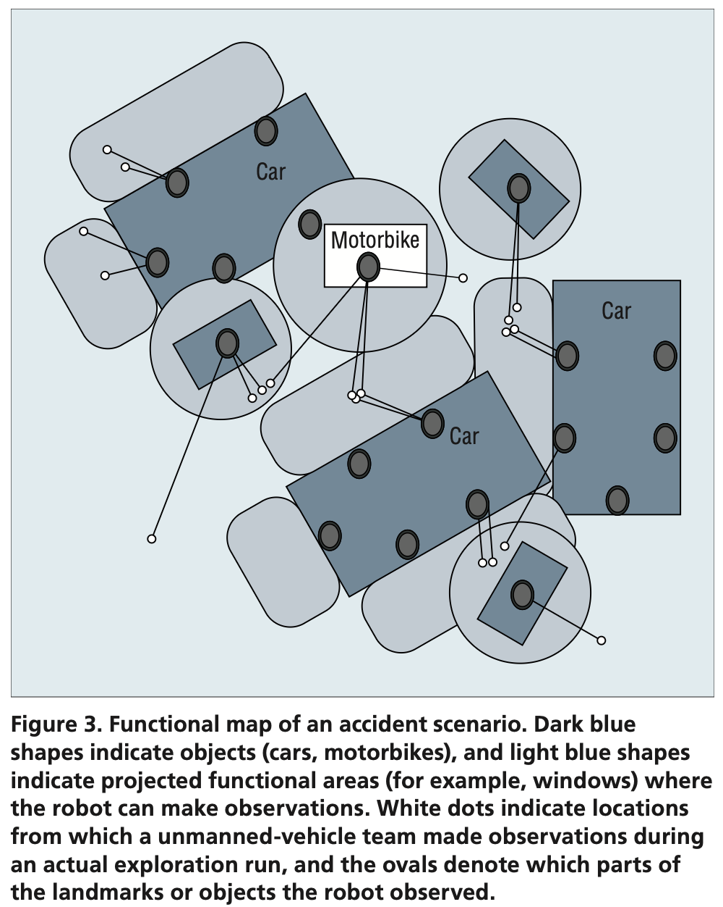
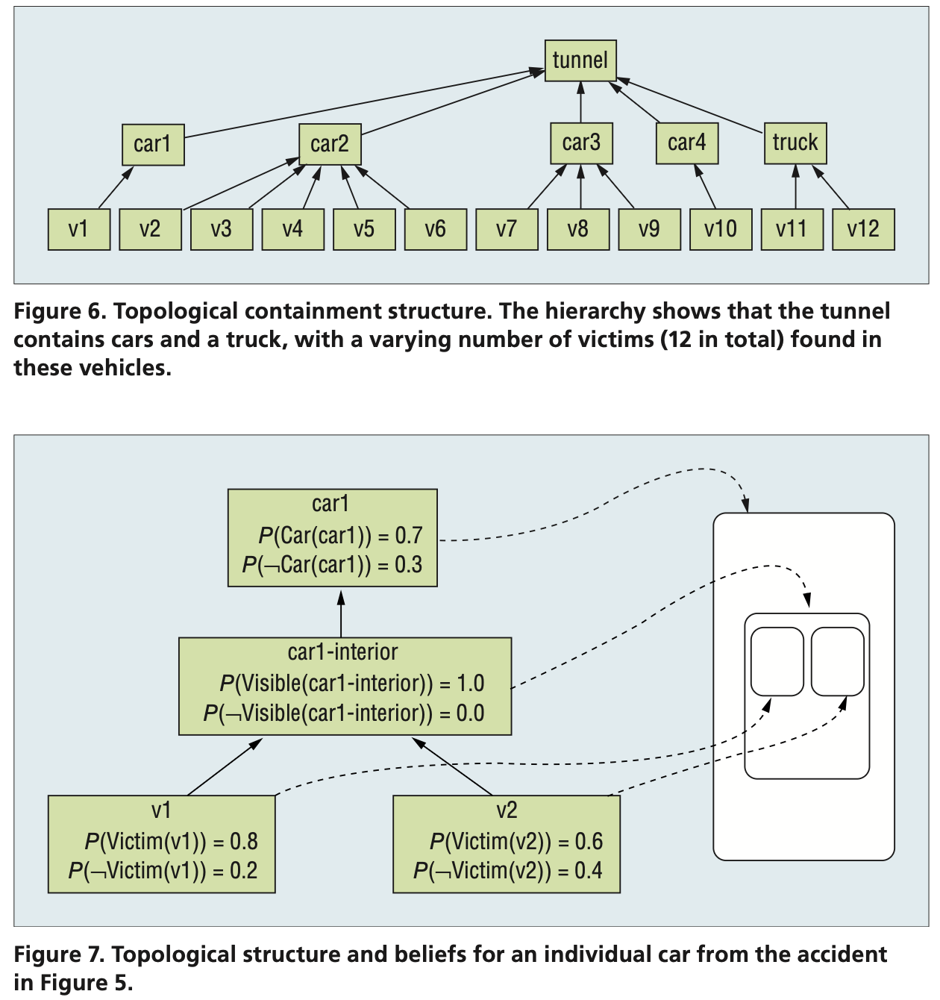

- Zender, H., Kruijff, G. J., Janicek, M. (2012). Situated communication for joint activity in human-robot teams. IEEE Intelligent Systems, 27(02), 27-35.
The question here is what it takes to make a robot understand human communication and produce communication that humans can easily understand in a given context. This requires an understanding of human communication—yet robots see and experience the world differently from humans.
Modeling Experience
Gary Klein and his colleagues outlined several basic requirements for turning agents (robots) into team players. However, their work includes a notion of shared or common information among actors. We assume that there is no common ground: robots and humans have their own perspective, their own experience, and their own ways of interpreting a situation. This approach allows for correcting misaligned interpretations.
Their approach to modeling situational awareness for robots makes it possible for an individual robot to comprehend and reason with distributed situational awareness. This conceptual approach establishes a link between probabilistic representations of experience and logical representations of domain knowledge. The latter make it possible to infer properties, available actions, and possible consequences. By modeling the inferences as beliefs, they can be attributed to any number of team members, both robot and human. Linking the beliefs to experience makes it possible to place them into time and space and suitably restrict them to what is actually possible.
Let’s assume the following accident proposed in the study: several cars are involved, identifiable by color, and a lot of rubble has resulted. The UAV mission specialist, looking at the UAV’s video feed, reports that there appears to be a victim in the red car.

Context: The mission commander instructs the UGV, “There is a victim in the red car; please ascertain status.” How does the robot link this command to its experience to know how to act on it?
Based on NIFTI architecture, the builds up a map incrementally for every situation it encounters.
- At the lowest level, the robot uses 2D and 3D data from a laser range sensor to build a metrical representation of the environment that provides a quantitative representation of spatial structure. The robot uses this information to navigate and avoid obstacles.
- To the metrical representation, the robot adds several qualitative levels of experience. Topological mapping constructs a 2.5D representation from the metrical information. The 2.5D view typically represents “free space”—space without any obstacles, landmarks, or other objects that would make it inaccessible. Anchored to this topological representation are the objects the robot has perceived with its camera. Such visual objects are located in metrical space and have a volume.
- Around these objects, the robot can construe topological regions: specifically, identify where the robot needs to be relative to an object or landmark in order to perform a particular action. This step makes these regions functional: they indicate where a particular action relative to a landmark is possible.
- This is where logical inference comes in. The robot is equipped with several domain ontologies, linking objects, areas, and landmarks to actions the robot is able to perform. Once it encounters an instance of an ontological concept, it can derive further properties of that instance.
For example, upon observing a car in an accident scenario, the robot can infer that the car has windows and is likely to have passengers. If a robot is instructed to look into a car, it will try to place itself near the car windows.
Functional Mapping
construction of conceptual-functional areas on top of the topological structure.

It’s a multi-layered map which, together with the metrical and topological layers, provides the robot with an awareness of the environment on which it can base its observations, understand what it sees, and project expectations about how it can act in the environment.
The robot has episodic-like memory. It’s a database which lets the robot recall events individually, by spatial area, by spatiotemporal window, or by content.
A belief
is a structure that captures a piece of information, such as the presence of a car or victim at a specific location, along with a spatio-temporal frame in which it is assumed to be valid, the robot’s degree of (un)certainty about its validity, and a set of agents (robot and human) for which the information is supposed to be valid.
It lets the robot consider situation awareness as a distributed phenomenon, encompassing its individual experience, common ground, and the contrast between these perspectives.
Modeling Communcation
If a robot is to understand what communication means, it first of all needs to understand the intention behind an utterance. This requirement sets the context for what kinds of meanings to construct (intension) and how to link that to actual experience (denotation).
Their approach allows for each proposition to be associated with an index by which it can be referenced, and the index has an ontological sort to express the kind of information it represents. For example, (i1:car & datsun) is a propositional formula about a car, i1, which is a Datsun. A property is expressed relationally, connecting one proposition with another: (i1:car & datsun & <\Color>(c1:color & red)) represents a red Datsun. Explicitly indexing the color means we can also reference it as a property in a question like “What is the color of the car?”
- intention recognition: contextual information which tries to establish why somebody might have said what they said. It indicates how the robot is supposed to act upon information received.
- reference solution: contextual information which tries to link possible interpretations to actual experience.
The result is a loop, not a strict pipeline, in which all three processes—parsing, intention recognition, and reference resolution—work together to gradually form a contextually appropriate interpretation.
Intention recognition is thus essentially a form of inference that we can model using abduction, logical reasoning in the following form:
- a surprising observation O was made
- if P were the case, O would follow; hence
- there is reason to believe that P.
These beliefs are typically uncertain, and they may provide only partial information. The inference therefore proceeds by constructing the most probable proof, given the probabilities associated with beliefs, and the least costly assumptions to fill in any gaps arising from incomplete information.
- Should it turn out, later on in the human-robot collaboration, that the robot made an incorrect assumption, it can be retracted. This makes the inference, and thus the entire process of dialogue interpretation, defeasible—that is, we can retract it in the light of new evidence, which may in turn invalidate some earlier assumptions.
- It’s important that the source of the misunderstanding can be explicit, letting the robot reason further.

The parser thus gradually constructs possible meaning representations, and intention recognition tries to establish possible (partial) proofs for how to explain them. In forming the explanation, intention recognition must establish which beliefs it can use (the intension), based on reference resolution.
Reference solution
- computes which of the robot’s beliefs would “materialize” the proposed explanations in the given context.
- The robot must link the reference to an object in the environment to know what the task is about.
The three-part process of parsing, intention recognition, and reference resolution thus involves the construction and grounding of graph structures against possibly uncertain and incomplete information in situational awareness.
Modeling Teamwork
Particularly for robots, we know that they can’t always perform every task fully autonomously
Robin Murphy's Law
any deployment of robotic systems will fall short of the target level of autonomy, creating or exacerbating a shortfall in mechanisms for coordination with human problem holders.
In other words, as robot autonomy in situ is going to vary, the roles these robots play will need to shift. This in turn affects the humans’ roles and thus the team dynamics.
Integrity limit factors
- indicate conditions on autonomy, such as required network bandwidth, confidence in perception, or locomotion.
LOA (Level of Autonomy)
- a model that links levels of autonomy to an explicit statement of the decisions and actions the robot can select to carry out, with or without human involvement.
A common aspect of all these systems is that situated dialogue processing is not a standalone process. Rather, it is closely tied to the spatiotemporal models built up through vision and mapping, uses a plan structure to determine an utterance’s context, and feeds important information back into the robot’s situation awareness.
NIFTi adopts a user-driven view, involving first responders in the entire development cycle.
Currently, NIFTi is at a stage in which several humans remotely collaborate with one or more semiautonomous unmanned ground vehicles (UGVs) using a multimodal GUI including spoken dialogue, and with an unmanned aerial vehicle (UAV) acting as a roving sensor.